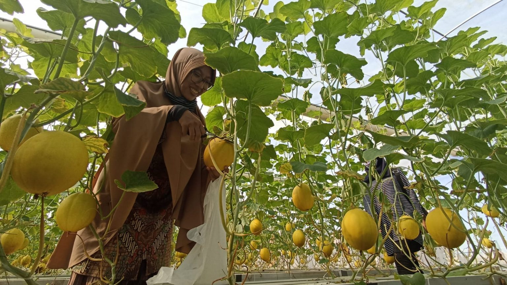

Tentang Saya
 KEBON AYU GERUNG – Lombok Barat tidak hanya memiliki potensi desa wisata alam berupa gunung, pantai, hutan yang tersebar di berbagai arah mulai dari utara, timur laut dan tenggara, selatan dan barat laut. Ada Senggigi, Sesaot, Mareje, Sekotong. Semula di desa wisata Kebon Ayu di dekat kota Gerung – ibukota Lombok Barat. Di sana, tidak hanya keberadaan jembatan gantung peninggalan Belanda dan wisata sungai sambil menikmati wisata kuliner penganan tradisional lokal seperti serabi sambil menonton atraksi adu ketangkasan Peresaian. Kini, di sana ada obyek baru mengunjungi kebun Golden Melon dan seterusnya jika kelak sudah berbuah akan bisa memetik Jambu Crystal, Jeruk Santang, Buah Kelengkeng dan Anggur yang sudah ditanam dan masih proses pengembangan. “Jadi pengujung bisa memilih berbagai buah. Sangat-sangat siap menjadi desa agrowisata,” kata Kepala Desa Kabon Ayu Jumarsa. Kepala Dinas Pariwisata Kabupaten Lombok Barat Saepul Akhkam saat berkunjung dan merasakan sensai memetik langsung buah melon ini mengatakan sangat mengapresiasi usaha yang dilakukan Jumarsa dan warganya Berkat kreatifitas anak-anak muda di Kebon Ayu, mereka menjadikan pusat pertanian sebagai agrowisata. “Ini semakin menambah alasan agar desa ini terus dikunjungi,” ujar Akhkam. Ia meyakini kelak tidak hanya menjadi agrowisata, tapi juga menjadi ekosistem ekonomi kreatif yang juga mengedepankan aspek edukasi pertanian. Golden Melon hasil petani Desa kebon Ayu Kecamatan Gerung terasa legit dan segar, teksturnya cukup tebal dan berwarna kuning. Buah melon ini sangat beda dengan buah melon pada umumnya, buah hasil petani Desa Kebon Ayu ini sangat direkomendasi untuk dikonsumsi setiap saat. Salah satu pengunjung yang sempat mencicipi legitnya Golden Melon tersebut, Sarah, mengaku rasa dari buah ini cukup menarik , memiliki rasa yang manis dan nikmat. Selain itu, Golden Melon ini memiliki aroma yang harum dan kaya akan vitamin. Kandungan air pada Golden Melon juga cukup banyak, sehingga bisa dikonsumsi sebagai pelepas dahaga. “Rasanya legit dan segar, kita petik dari pohonnya langsung. Saya sangat rekomondasi buah ini,” imbuh Sarah, Juma’t 17 Desember 2021 kemarin. Kepala Desa Kebon Ayu Jumarsa, mengatakan penanaman buah ini tidak sembarangan, butuh perlakuan khusus agar rasa yang dihasilkan manis dan berkualitas. Konsep penanaman menggunakan hidroponik greenhouse, salah satu kelebihanya adalah meminimalisir hama, sehingga tidak menggunakan zat kimia. Golen Melon Hidroponik ini dari segi rasanya lebih manis dan kualitas buahnya itu beda dari yg di tanam di sawa pada umumnya. Buah dari para petani Kebon Ayu ini bisa bertahan hingga satu setengah bulan di luar kulkas. ”Karena golden melon hidroponik ini beda perawatannya,” ucap Jumarsa. Untuk bisa membawa pulang buah melon ini, pengunjung cukup membayar Rp 20 ribu perkilogram. Pengunjung bisa memilih dan memetik langsung dari pohonya. Sensai memetik sendiri menurut Jumarsa memiliki sensasi yang beda bagi para pengunjung.